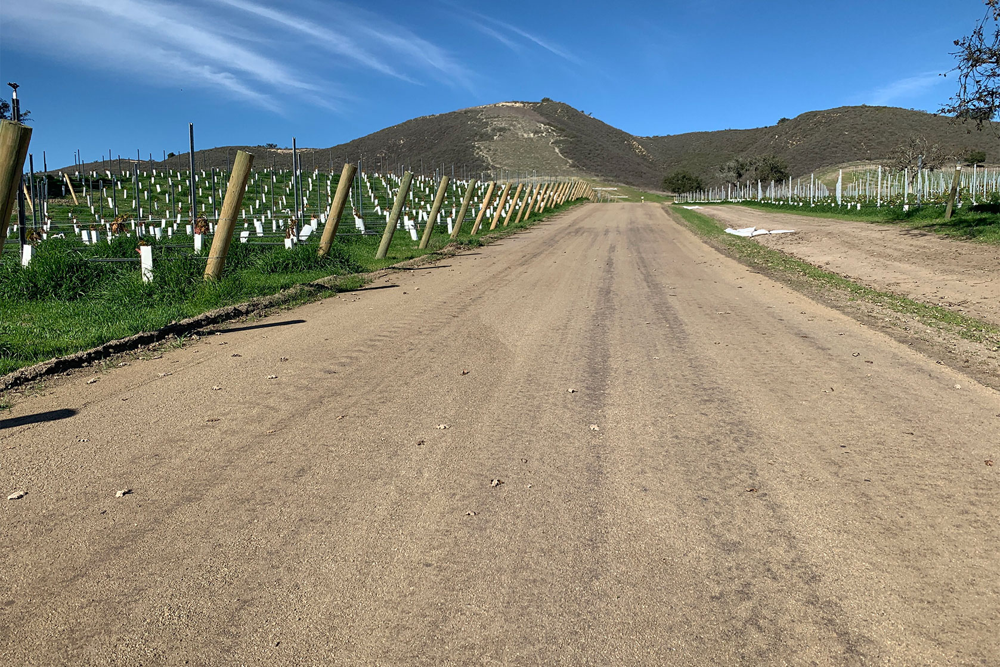

The Technical Application Services (TAS) group at Midwest Industrial Supply, Inc. is the go to team when product development meeting field applications. The Technical Application Services team has put together an impressive knowledge pool that including subject matter experts in:
| De-Icing & Anti-icing The use and application of chemical agents to melt or prevent ice build up. |
|
| Industrial and argicultural dust supression. Large and small scale equipment and material to help mitagate dust. |
|
|  | Soil Stabilization Using proprietary methods to improve the condition of roadways, construction sites and gravel runways. |
| Rail Friction Managment Using chemistry to improve rail and rolling stock performace and life span. |
|
| Class A Fire Foam Using foaming agent to fight and prevent the spread of fire. |